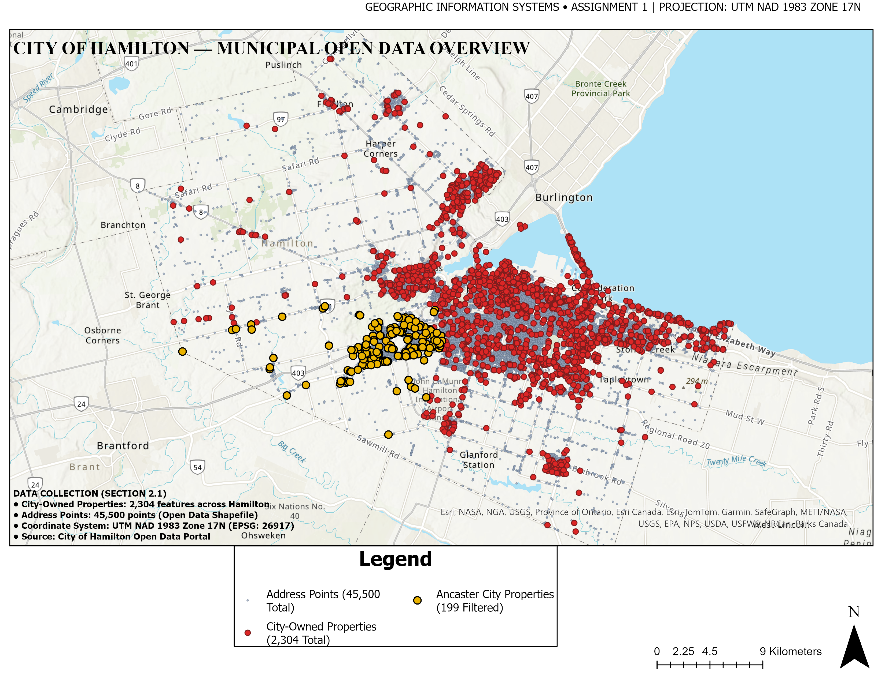
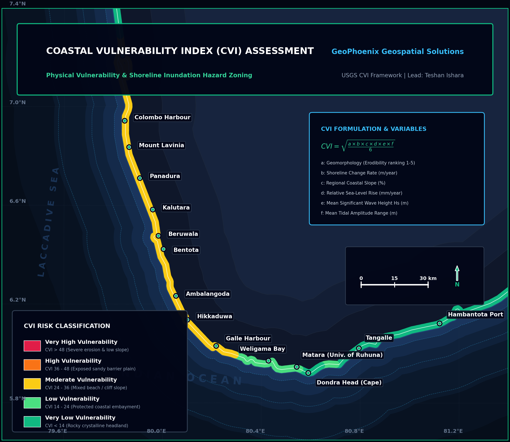
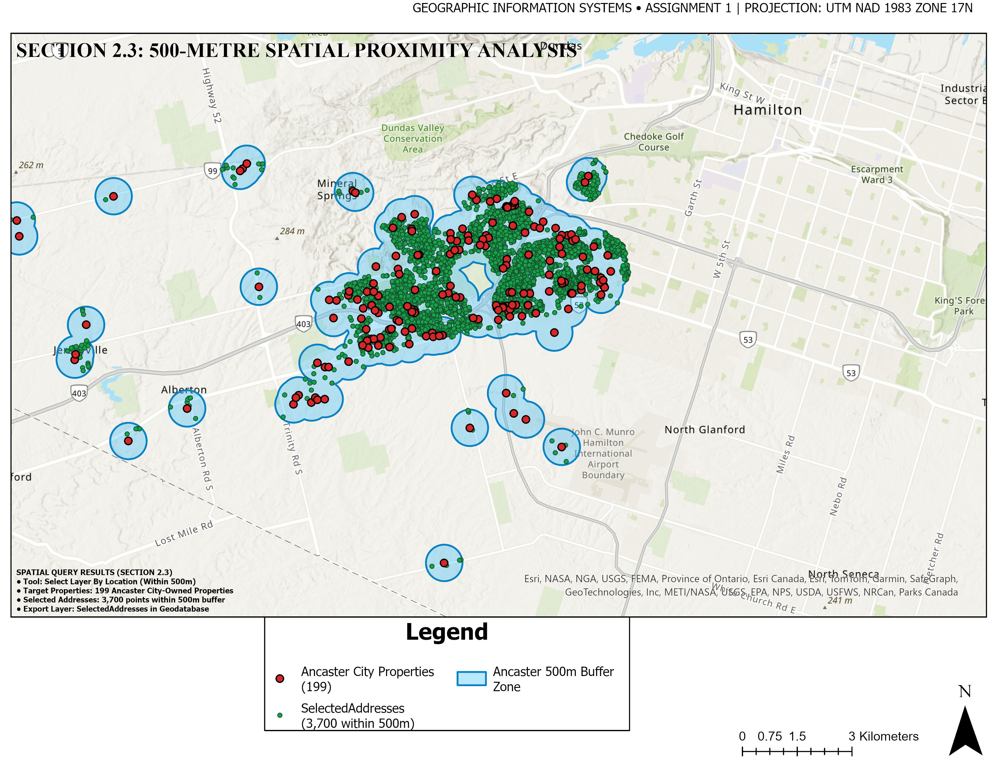
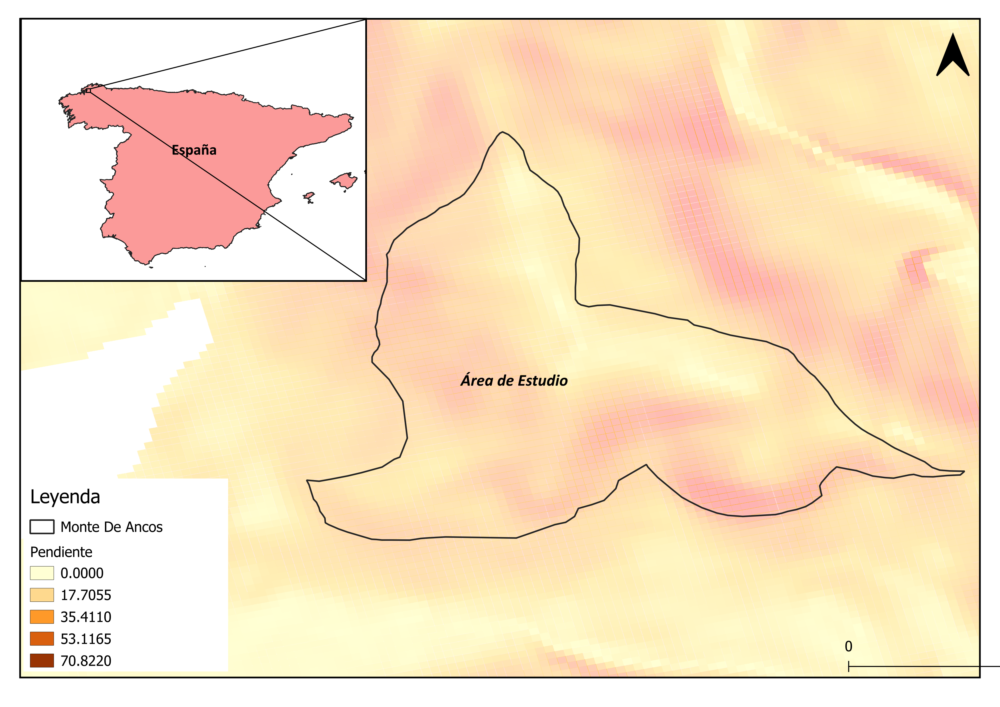
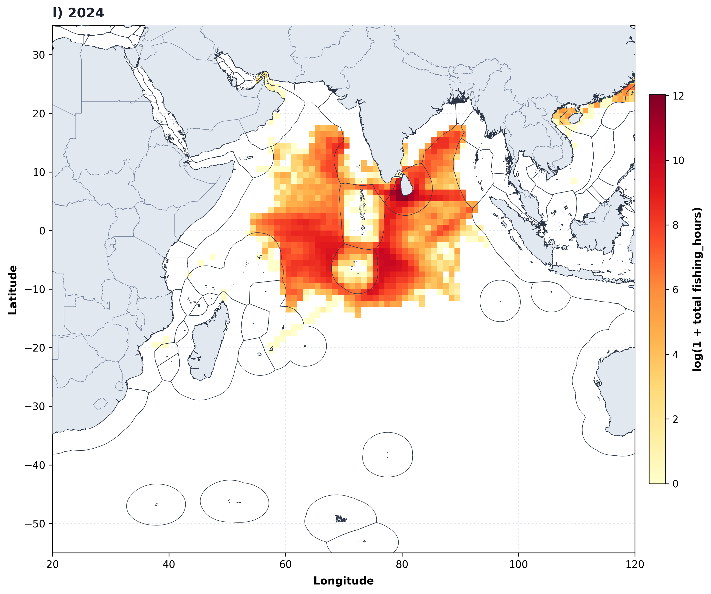
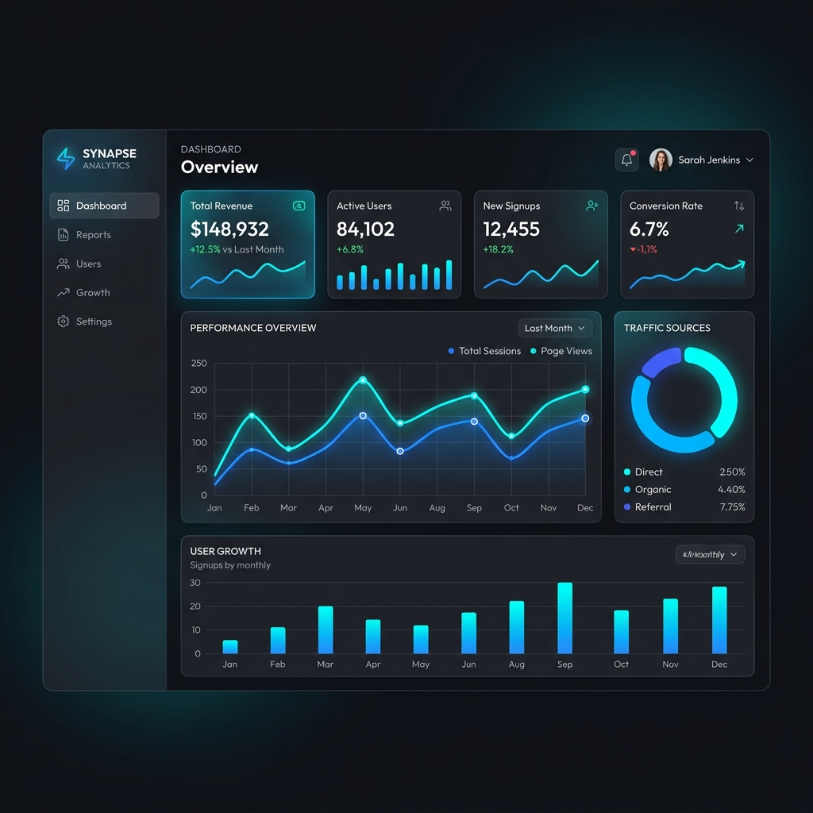

Municipal Cadastral & Zoning Delineation
Objective: Deliver a publication-grade municipal spatial overview establishing property boundaries, environmental conservation areas, and core transportation arteries for local planning authorities.
Data Sources: Municipal cadastral vectors, OpenStreetMap road centerlines, provincial conservation limits.
Methodology: Multi-layer topology validation, dynamic label placement hierarchy, scale-dependent symbolization, and dual locator insets in NAD83 / UTM Zone 17N.
Final Deliverables: 300 DPI Vector PDF map, clean OGC GeoPackage database, styled layer definitions (.qml).

Coastal Vulnerability Index (CVI) Assessment
Objective: Quantify physical shoreline exposure under accelerated sea-level rise, storm surge, and coastal erosion scenarios to prioritize coastal protection infrastructure.
Data Sources: High-resolution bathymetric contours, wave climate buoy records, tidal harmonics, geological coastal landform classifications.
Methodology: USGS CVI formula integrating 6 physical variables normalized to 1–5 risk scores. Shoreline segmented into 250m evaluation transects.
Final Deliverables: Segmented hazard vector (.gpkg), high-resolution cartographic atlas, quantitative risk matrix report.

Urban Solar Potential & Canopy Dynamics
Objective: Model rooftop solar radiation potential against urban green canopy density (NDVI) to identify microclimate heat islands and prime renewable energy targets.
Data Sources: ESA Sentinel-2 MSI multispectral surface reflectance (10m) and high-resolution Digital Surface Model (DSM).
Methodology: Cloud masking, Normalized Difference Vegetation Index computation, hemispherical viewshed solar irradiance modeling, and zonal rooftop aggregation.
Final Deliverables: Calibrated 32-bit Float GeoTIFFs, rooftop solar ranking database, executive municipal summary.

Forest Fire Fuel Model & Moisture Deficit
Objective: Delineate high-combustion risk forest parcels by classifying canopy fuel loading and calculating vegetative moisture deficits ahead of seasonal wildfire peaks.
Data Sources: Landsat 8 multispectral bands (NIR/SWIR), thermal infrared (Band 10), and SRTM 30m topographic slope.
Methodology: Normalized Difference Moisture Index (NDMI) calculation, slope aspect stratification, Rothermel fuel model cross-coding, and thermal anomaly detection.
Final Deliverables: Zonal wildfire combustion risk maps, classified GeoTIFF surface, spatial statistics table.

500m Environmental Proximity & Parcel Selection
Objective: Identify and isolate all residential and commercial parcels intersecting within 500 meters of environmental conservation zones to ensure municipal compliance.
Data Sources: Municipal cadastral parcels, protected conservation boundary shapefiles, road networks.
Methodology: Multi-ring Euclidean buffer generation, spatial intersection overlay, attribute query filtering, and selection matrix extraction.
Final Deliverables: Filtered parcel selection GeoPackage (.gpkg), detailed analysis report, high-contrast cartographic exhibits.

Hydrological Terrain & Slope Stability Evaluation
Objective: Quantify geotechnical slope stability and surface runoff concentration across complex mountainous terrain for infrastructure routing feasibility.
Data Sources: High-resolution DEM, soil texture records, precipitation intensity grids.
Methodology: Zevenbergen-Thorne slope gradient derivation, Topographic Wetness Index (TWI), stream power index (SPI), and D8 flow accumulation routing.
Final Deliverables: Multi-criteria slope stability hazard map, continuous georeferenced rasters, watershed stream vectors.

Automated Decadal Marine Map Synthesis
Objective: Automate the annual synthesis and high-resolution cartographic rendering of 13 years of gridded marine fishing effort across the entire Indian Ocean basin.
Data Sources: 1-degree gridded vessel monitoring datasets (2013-2025), Natural Earth global coastlines.
Methodology: Engineered custom Python script using Pandas, GeoPandas, and Matplotlib to iterate over annual data slices, compute log-scaled effort densities, and plot standardized figures automatically.
Final Deliverables: Automated Python script codebase, 13 publication-quality annual map figures, gridded spatial datasets.

Interactive Operations & Territory Dashboard
Objective: Transform corporate transactional and branch location data into an interactive, real-time analytics web dashboard for operational monitoring and territory performance tracking.
Data Sources: Corporate transaction records, regional logistics zones, geographic coordinates.
Methodology: Automated Python ETL aggregating sales metrics by geographic cluster, paired with Chart.js responsive frontend data visualizations.
Final Deliverables: Standalone web application, automated data parsing pipeline, interactive charts.